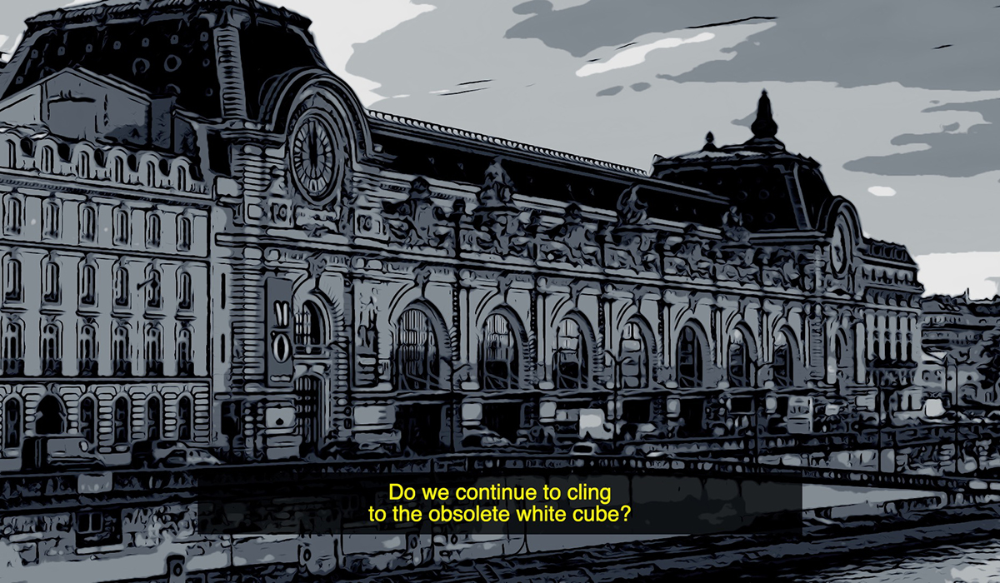
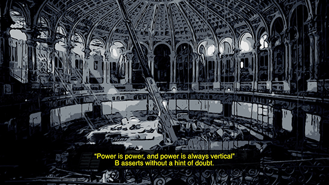

Vídeo digital // 41’ // 2026 // Beca EMPELT de apoyo a la investigación artística
¿Cuáles son los mayores retos a los que se enfrenta el museo de arte del futuro? ¿Son arquitectónicos? ¿Tecnológicos? ¿De conservación? ¿De sostenibilidad ¿De mediación? ¿Cuál es la función de los museos en el S XXI? ¿Seguimos demasiado apegadxs al concepto de cubo blanco y la sacralización que esto conlleva? ¿En qué manera afectarán los cambios políticos y la deriva neoliberal a la gestión de los museos? ¿Y el uso de la Inteligencia Artificial? ¿Cómo puede un museo –que contiene obras del pasado– enfrentarse al futuro? ¿Cuál es nuestra relación con el concepto de patrimonio? ¿Puede un museo transformar las estructuras jerárquicas, patriarcales y coloniales que lo sostienen? ¿Tiene sentido que los museos amplíen sus colecciones cada vez más en un mundo en el que los recursos naturales son cada vez más escasos? Todas estas preguntas y muchas otras surgen cuando hablamos de los museos de arte y de su incierto futuro. Partiendo del caso de estudio concreto del MNAC (Museo Nacional de Arte de Cataluña), que se ampliará con una nueva sede en 2929 (el Palacio Victoria Eugenia), el videoensayo El museo del futuro reflexiona sobre el arte y el futuro de los museos en unos tiempos en los que la incertidumbre se ha instalado en nuestras vidas.


{kind=link}